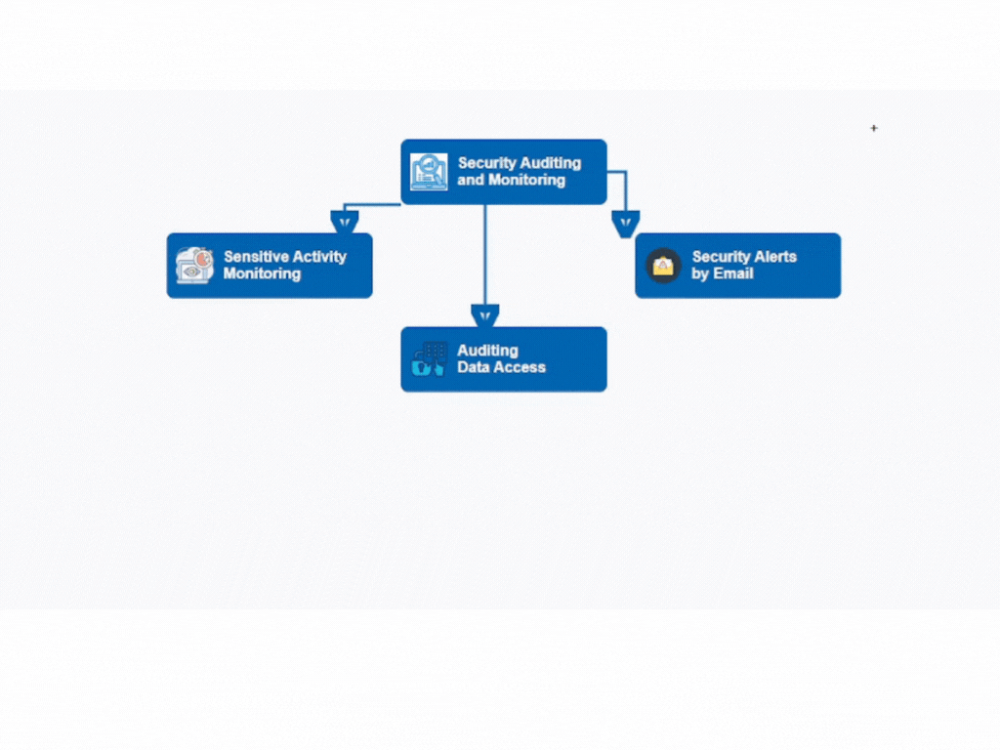

Seguridad Práctica en Bases de Datos
2. Arquitectura
Estructura general de seguridad
Ej: MySQL Enterprise Audit Plugin
Ver diagrama
1. Infraestructura Segura
Ubuntu Server / CentOS
Estabilidad y seguridad
UFW, iptables, SELinux
3. Componentes
Usuarios acceden vía app web
WAF filtra tráfico malicioso
Servidor aloja motor de BD
BD devuelve resultados
Flujo de Componentes
👤
Usuario
🛡️
WAF
🖥️
Servidor
💾
BD
4. WAF y su Función
Bloquea SQLi, XSS, endpoints
Protección indirecta de BD
Ej: ModSecurity, Cloudflare
Ejemplo Visual: Cómo actúa el WAF
Hacker
❌ Bloqueado
WAF
Base de Datos
5. Auditoría y Trazabilidad
Registra actividad de usuarios
Errores y cambios sensibles
Usa plugins o logs nativos

Ej: MySQL Enterprise Audit Plugin
Ver diagrama
6. Trazabilidad con MySQL
Consulta ejemplo:
SELECT * FROM mysql.general_log
WHERE user_host LIKE '%usuario%'
AND argument LIKE '%DELETE%';
7. Herramientas y funciones
MySQL Enterprise Audit Plugin (de pago, pero hay alternativas).
Percona Server for MySQL + audit_log plugin (gratuito).
Uso de general_log y slow_query_log para monitoreo básico.
Ej: MySQL Enterprise Audit Plugin
Ver diagrama
8. Percona Toolkit
pt-query-digest (auditoría)
pt-table-checksum (comparación)
Consulta lenta / replicación
Ej: PERCONA Toolkit
Ver diagrama
9. Resumen Final
Usar sistemas sólidos y WAF
Monitoreo con auditoría
Respaldos frecuentes


 Hacker
Hacker